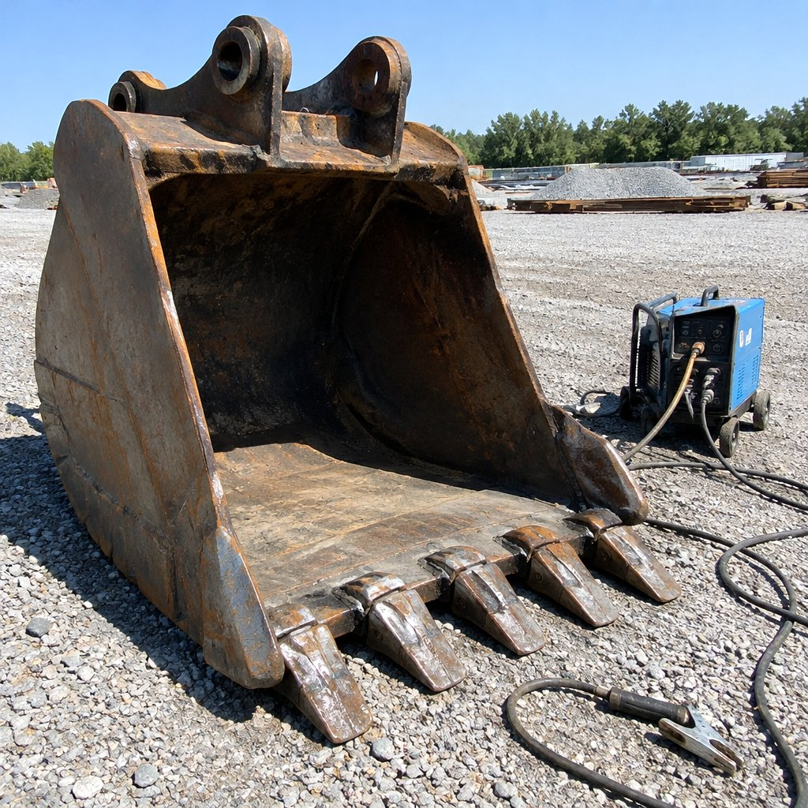
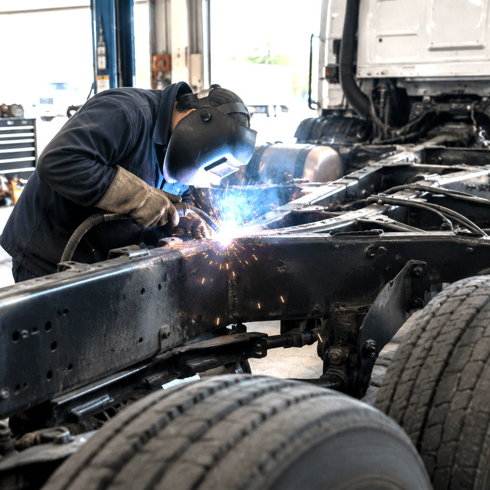

Ремонт ковшей, кузовов и рам — приезжаем на объект
Своя сварочная бригада и оборудование: варим ковши, рамы грузовиков и прицепов, кузова и металлоконструкции. На месте у вас или у нас — как удобнее.
Шесть типовых работ
Нажмите на узел: покажу, что делаем, сколько занимает и что понадобится от вас для оценки.
Выберите узел
Слева — шесть типовых работ. Нажмите на нужный, и я покажу, что именно делаем, сколько это занимает и что понадобится от вас.
Выездная бригада, а не «приедет знакомый с аппаратом»
Работаем с техникой, которая стоит денег, и знаем, что простой дороже ремонта.
Оборудование с собой
Сварочные аппараты, генератор, инструмент и запас металла — приезжаем готовыми к работе, а не «посмотреть».
Варим по технологии
Разделка трещин, проварка корня шва, усиление накладками. Без «замазали сверху, чтобы не текло».
Техника любого класса
Ковши экскаваторов и погрузчиков, рамы грузовиков и прицепов, кузова самосвалов, отвалы и металлоконструкции.
Считаем по фото
Пришлите снимок и размеры — назовём ориентир по срокам и объёму до выезда.
От фото до готовой техники
Четыре шага, которые понятны заранее.
Заявка и фото
Присылаете фото узла и что случилось. Уточняем технику и условия подъезда.
Оценка
Называем объём работ, ориентировочную стоимость и срок. Точнее — после осмотра.
Выезд или заезд
Работаем у вас на объекте или забираем узел к себе, если так удобнее.
Проверка и сдача
Показываем швы, проверяем геометрию и посадки, объясняем, что делать дальше.
Сварочные работы любой сложности
От прихватки до ремонта нагруженных металлоконструкций.

Полуавтомат и ручная дуговая сварка, разделка трещин, наплавка, усиление накладками. Работаем с чёрным металлом и изношенными поверхностями, где обычная сварка не держится.
- Сварка ковшей, рам, кузовов
- Наплавка кромок и зубьев
- Усиление накладками
- Ремонт проушин и креплений
- Металлоконструкции по чертежу
- Выезд на объект
Приезжаем на объект
Если техника не может уехать — приезжаем сами. Минский район и Минская область, дальние адреса обсуждаем отдельно.
Частые вопросы
Техника стоит? Пришлите фото
Опишите узел и что случилось — ответим с ориентиром по срокам и объёму работ.